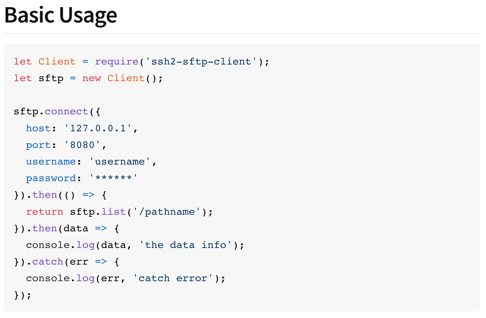
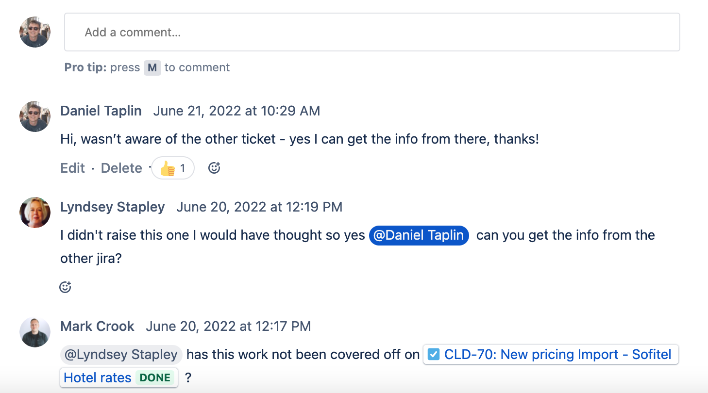
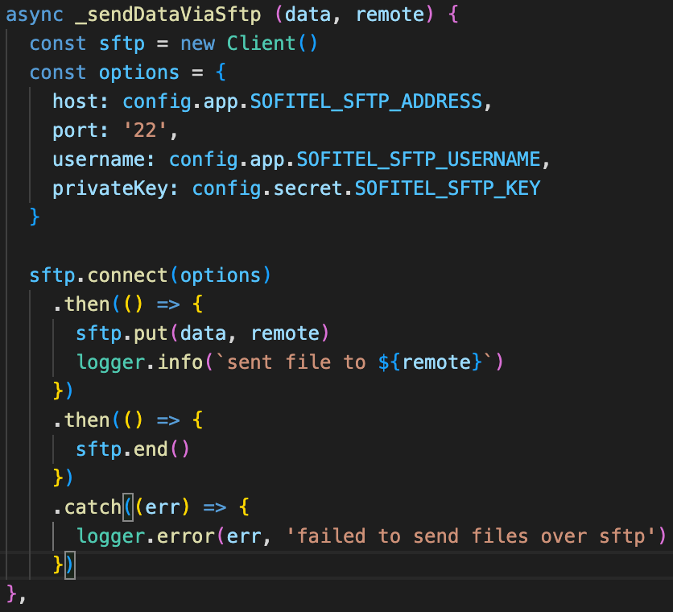
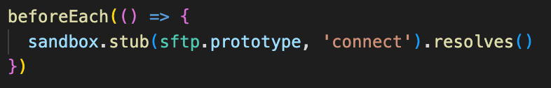
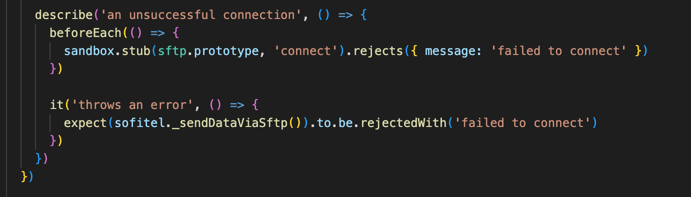

INTG-466
Situation
Holiday Extras is currently receiving Excel documents containing rates from a hotel supplier via email. These files need to be sent to Holiday Extras’ central reservation system, named CHIPS, via Secure File Transfer Protocol (SFTP) so that those rates can be used by our agents to make bookings. The ticket highlights that CHIPS used to have an in-built function for importing email attachments, but it has been advised that it would not be possible to re-activate this functionality and instead another solution needs to be found.
The ticket, named INTG-466, was assigned to me during a Sprint Planning meeting by the Delivery Manager, and was assigned 2 “story points,” an estimate that meant this work should take around one full day to complete. Highlighted in the ticket’s description was an existing Integration service that, due to previous work that had been done, reads and tags these emails and sends their contents to Google Cloud Storage, and this service is suggested as the repository for me to work with.
As this work involved simply adding a new feature onto an application that already exists, in addition to this being part of an ongoing project, I personally was not involved in the “Planning” Software Development Life Cycle stage on this occasion. This stage was handled by the Technical Leads in my Adventure, as well as the more senior developers in my Squad. I was instead given the output of that stage: a list of business requirements that this work should fulfil. (K1) (K3)
Task
At the time I started to investigate this ticket, I was very unfamiliar with the majority of the technology that it involved; I had some knowledge of Javascript and Node, the language and environment the work was written in, but was otherwise unfamiliar with microservice architecture & frameworks, the SFTP protocol, and Mocha, the testing framework this particular service uses. This meant the first major challenge was to figure out what the finished result should look like, as well as where and how to implement it into the existing codebase.
I first reached out via Slack, the team’s main method of communication, to my teammate who had raised the ticket, to gain more insight into what was required of me, a clearer picture of the end result, and where this work sat in the wider system that uses it. He illustrated to me over a Google Meet video call how this system works, receiving emails from the supplier with the rates files attached, indicating to me the file that tags and sends the contents of those attachments to Google Cloud Storage, and that this work should consist of a new function within that file that is called at some point during that process. (K4) (K3)
This stage of the ticket was related to the “defining requirements” stage of the Software Development Lifecycle - I took the specification given in the ticket as the input, and determined a list of required features for this module as an output. (K1)
Action
The service was written using Node.js, a runtime environment used to run Javascript. Node packages are collections of Javascript files and modules that extend the functionality of Javascript, so I would have to install one of these in order for the service to perform SFTP file transfers. I searched for and found a package called ssh2-sftp-client, installed it using Node package Manager, and looked through its documentation to find a working example of it in use. I chose to use the design of this example as a template for my own work, relating to the “Design and Prototyping” stage of the Software Development Life Cycle, as I determined that this structure, as well as use of the “connect,” “put” and “end” methods of the module would be a suitable output, given the input of my the of required features. (K1)
The “Basic Usage” example from the ssh2-sftp-client documentation
Transferring files over Secure File Transfer Protocol involves a Client connecting to a Server and exchanging files between the two. To establish a connection, the client must provide credentials to the server - as can be seen in the “Basic Usage” example above, these include:
- The host address, typically an IP address;
- A port number;
- A username;
- A password
I next inquired to my teammates about where I could find these credentials. I was advised that I may need to have them created by another team called the Cloud Platform Squad, so I contacted that team, again via Slack, and was advised to raise a ticket asking for all 4 of the above, which I did immediately afterwards. (K4) (K3)
The Cloud Platform Squad advised me that they would look at the ticket I raised in their next sprint starting the following week, so I decided to proceed with creating the function itself in the meantime. Following the “Basic Usage” example and the ssh2-sftp-client documentation, I created a function that connects to the server using the ‘connect’ method, sends the file using the ‘put’ method, and ends the connection using the ‘end’ method; I included a ‘catch’ block that would output an error if one occurred, and added some logging in order for the team to be able to see whether the function had succeeded or failed to send the files.
At this point, a member of the Cloud Platform Squad informed me via Jira that the credentials I had asked for had already been created for a previous piece of work. These included the IP address of the CHIPS server, a username and an SSH key, an alternative method of authentication instead of a password. (K4)
I am informed via Jira comments that the credentials were created as part of another ticket
I consulted another team member about how to properly handle this business-sensitive information, and was pointed towards the Continuous Integration service (CI). Looking at the information already entered into the CI, I deduced that this service creates key-value pairs within a configuration file, so that the code can refer to the key rather than stating the value itself. For example, once entered into the CI, the SSH key can be referred to in code as config.secret.SOFITEL_SFTP_KEY, rather than the code containing the SFTP key and therefore potentially exposing it in the code repository.
Upon further discussion with members of my team, I found that while hiding this sensitive information is generally considered good practice at Holiday Extras, the company does not have a formal written policy around it. I also determined that, since the SFTP account whose details I was handling constitutes a business entity and is not related to an individual person, it is not covered by GDPR legislation. (K8)
This stage of writing the code itself is related to the “Development” stage of the Software Development Life Cycle, taking my prototype as the input and expanding it into a fully functional piece of software as the output. (K1)
Early version of the sftp function that uses .then() and .catch(), with “secret” references to hidden sensitive information such as the SSH private key
In order to test the logic of this function, I would have to write a number of unit tests using the Mocha framework. I derived the basic syntax for these using the existing unit tests already in the repository. An important principle in software testing is only to test the module being written, and not its dependencies; therefore, I needed to ‘mock’ the behaviour of the ssh2-sftp-client module and its methods, such as ‘connect’, ‘put’ and ‘end.’ This allowed the tests to assume these methods work as intended, and not to actually invoke them while running.
An example of ssh2-sftp-client’s ‘connect’ being mocked, assuming that it connects successfully.
I created unit tests to cover the following outcomes of running the function:
- The function fails to connect to the SFTP server;
- It connects successfully, but the files are not sent;
- It connects successfully, and the files are sent.
Unit test stubbing the “connect” and “put” methods and testing a successful connection and successful file send
Unit test stubbing the “connect” method, testing an unsuccessful connection
This work covered the “Testing” stage of the Software Development Life Cycle. Given the fully developed software as an input, I was able to output the assurance that it functions as intended by writing a comprehensive test suite. (K1) (S13)
With the function and unit tests written, I was now ready to open a Pull Request, a request to have the code merged into the live “production” codebase. Upon opening this Pull Request, the code underwent an automated check to make sure all of my tests were passing, only allowing me to proceed if this check was passed. This formalises the “testing” stage of the Software Development Life Cycle, and assures that engineers have fulfilled that stage before continuing to the “deployment” stage. Another formal procedure for Deployment requires all Pull Requests to receive at least one approving review from a fellow engineer.
I communicated to my team that my code was ready for review, once again using Slack as directed by my Delivery Manager. In addition to a small amount of refactoring, the reviewer requested that I change the structure of the code to use Javascript’s ‘async’ and ‘await’ keywords, instead of the ‘then’ and ‘catch’ blocks in the code, in order to make the code and the order it is executed in clearer and more readable. After I did this and re-committed the result, the Pull Request was approved and was now ready to be deployed. (K4)
The next step was to deploy the work, covering the “Deployment” stage of the Software Development Life Cycle. For this particular unit of work, deployment consisted simply of “merging” the pull request on Github. The code then goes through the Continuous Integration service which automatically checks for errors, failing tests and other warning signs, before pushing the code into the Production codebase and allowing it to go live. The files in my pull request were the input in this case, and the output saw them going live in Production. (K1)
After deployment, I could mark this ticket as “done,” however my name and the details of this work were recorded in the Jira system, so if any issues arose in the future there would be a record of my involvement with the project, and the specifics of what I had done. This leaves open the possibility of the final “Maintenance” Stage of the Software Development Life Cycle (K1) (K3)
Result
Final version of the function, using async/await and try/catch
By doing this ticket, I have learned a number of new systems and technologies used at Holiday Extras:
- Using the Secure File Transfer Protocol programmatically using Javascript and Node;
- Dealing with Client Secrets and business-sensitive information using the Continuous Integration service;
- Holiday Extras’ code style preferences, such as the use of async/await instead of .then syntax;
- Using the Mocha testing framework, and how to test this function using stubs to imitate the behaviour of the Node package being used.
Additionally, it allowed me to be involved in the Design and Prototyping, Development, Testing and Deployment stages of the Software Development Life Cycle (K1)
Conclusion
This ticket was a great way for me to go through the entire process of actioning one work ticket from start to finish, and for me to seek assistance from various sources where it was needed. In addition to learning some new technology and techniques for using it, I learned that I could not simply do this work on my own and would need to approach others from my own and other teams in order to gather all the information I needed.
A point of development I took away from doing this ticket was around my miscommunication with Cloud Platform. I asked for credentials to be made, and was requested to open a ticket when the work had already been done previously; on reflection, my inexperience with SFTP might have meant I was unclear in my description of what I wanted. This experience will lead me to try to communicate more clearly and effectively in the future.
Directly as a consequence of me doing this piece of work, Holiday Extras was able to benefit from having rate files from a supplier sent directly into our CRS, increasing efficiency and avoiding the time-consuming process of having to do this task manually. An indirect benefit of this work happened when I asked about Holiday Extras’ policy regarding the handling of sensitive business data: my teammates concluded that since there was no formal policy, it would be appropriate to write one in the near future.